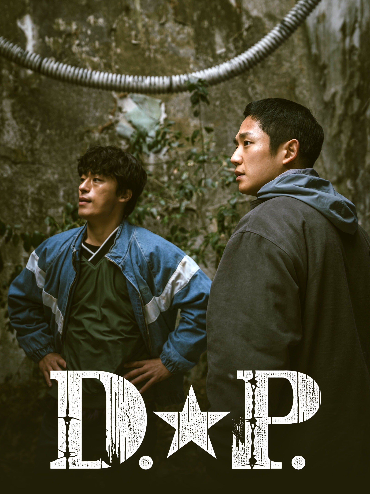

10. The King of Pigs

"The King of Pigs" tells the story of two friends, Hwang Kyung-min and Jung Jong-suk, who were victims of severe bullying in school. Years later, Kyung-min, unable to forget the trauma, becomes a serial killer seeking revenge, while Jong-suk, now a detective, is forced to confront his past and stop the killings. The series explores the lasting impact of school violence and the dark secrets of their past, intertwining their present lives as they grapple with the consequences of their shared trauma.

"Twinkling Watermelon" tells the story of Eun Gyeol, a CODA (Child of Deaf Adults) student with a passion for music who travels back in time to 1995. In the past, he encounters his young father, Yi Chan, and forms a band called Watermelon Sugar with him and other youths. Eun Gyeol aims to ensure his parents' relationship while also pursuing his love for music, all while navigating the complexities of his time-travel experience.
"A Shop for Killers" is a South Korean action drama series about Jeong Ji-an, a young woman who inherits her uncle's mysterious shopping mall after his death. She soon discovers the mall is a front for a clandestine operation supplying weapons and equipment to professional killers, and she is thrust into a dangerous world of assassins and powerful organizations. Forced to confront her uncle's past and the truth about his life, Ji-an must learn to survive and protect herself
Moving is a South Korean fantasy-action drama series about three high school students who possess inherited superhuman abilities and their parents who try to protect them from organizations that want to exploit these powers. The series explores their lives, their hidden abilities, and the dangers they face due to their unique genetics.

"D.P." (Deserter Pursuit) is a South Korean Netflix series that follows a team of military police tasked with capturing army deserters, highlighting the harsh realities and systemic issues within the South Korean military. The series explores themes of bullying, hazing, corruption, and the psychological impact of mandatory military service, particularly focusing on the stories of individual soldiers who desert and the reasons behind their actions.

"Death's Game" is a South Korean drama about a man named Choi Yee-jae who, after attempting suicide, is punished by Death to experience death 12 more times through different bodies. If he can survive one of these lives, he can avoid being condemned to hell.

"Weak Hero Class 1" is a South Korean action-youth drama series about a model student named Yeon Si-eun who is physically weak but uses his intelligence, tools, and psychology to fight against violence within and outside his school. He befriends two other students, Ahn Su-ho and Oh Beom-seok, and together they navigate a high school life filled with bullying and learn what it means to be strong. The series is based on a popular webtoon by Seopass and Razen.

"Taxi Driver" is a South Korean drama series about Kim Do-gi, a former special forces officer seeking revenge after his mother's murder. He joins Rainbow Taxi, a secret organization that offers a "revenge-call" service, helping victims who haven't found justice through legal means. The series follows Do-gi as he carries out these acts of vengeance while also facing a determined prosecutor, Kang Ha-na, who is investigating Rainbow Taxi.
"Move to Heaven" is a K-drama about a young man named Geu-ru, who has Asperger's syndrome, and his relationship with his newly-found ex-convict uncle, Sang-gu. They run a trauma cleaning service, "Move to Heaven," where they clear out the belongings of deceased individuals and help families understand the stories of their loved ones. The series explores themes of loss, grief, and the importance of human connection, as Sang-gu grapples with his own painful past and navigates his relationship with Geu-ru.
1. When Life Gives You Tangerines

"When Life Gives You Tangerines" tells the story of Ae-sun and Gwan-sik, two young people from Jeju Island in the 1950s, and their enduring love across decades. The series, narrated by their daughter, Yang Geum-yeong, explores their lives as they face challenges, navigate societal expectations, and build a family amidst the backdrop of a changing Korea. It's a story about resilience, love, and finding beauty in the midst of life's struggles.